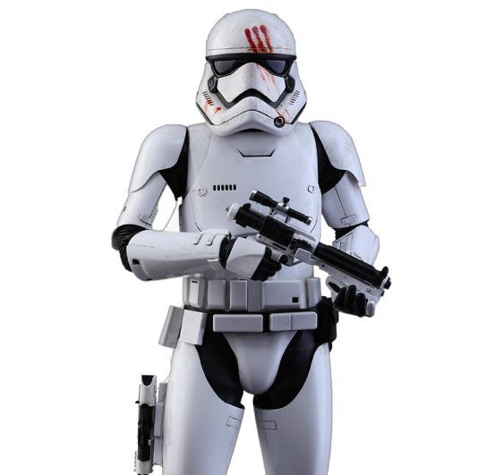

StormTrooper
Imperial stormtroopers, also known simply as stormtroopers, were the elite soldiers of the Galactic Empire and many of its successor states. Like Imperial-class Star Destroyers and TIE fighters, stormtroopers served as ever-present reminders of the absolute power of Emperor Palpatine and would remain an icon of Imperial war efforts for over a century following his death. These faceless enforcers of the New Order were considered an extension of the Emperor's will, and often used efficient yet brutal tactics to keep thousands of star systems throughout the galaxy in submission to the Empire. At the height of the Empire, stormtroopers had effectively become symbols of major authority. With few exceptions, they were distinguished from all other military units by their signature white armor.